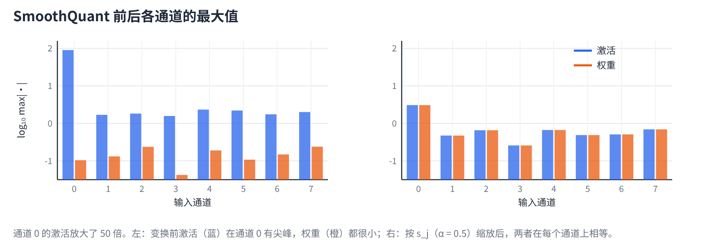
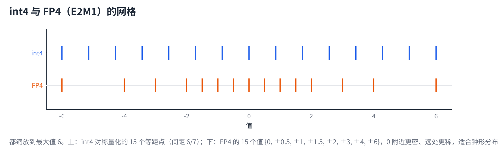
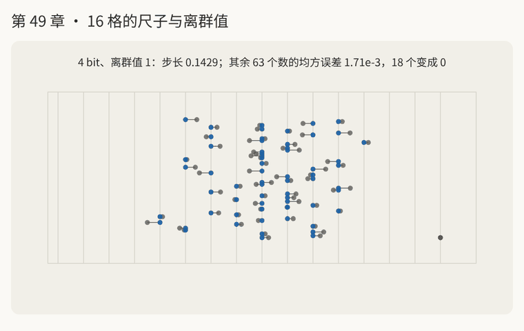

第 49 章 · 量化的数学：scale 与 zero point、舍入误差、离群值、SmoothQuant、GPTQ 的误差补偿、FP4
本地运行
git clone https://github.com/wikieden/math-and-eval-stats
cd math-and-eval-stats/code/notebooks
pip install jupyterlab torch numpy
jupyter lab ch49_quantization.ipynb也可以下载后直接用 VS Code 打开 .ipynb 运行。需要 GPU 的章节在 Colab 里选「代码执行程序 → 更改运行时类型 → GPU」。
本章回答：把 bf16 的权重压成 4 bit，scale 和 zero point 怎么定？舍入误差有多大？为什么一个离群值能毁掉整段的精度？SmoothQuant 怎么在不改变输出的前提下把激活变好量化？GPTQ 为什么比逐个四舍五入好？FP4 能表示哪些数？
讲解日期：2026-11-25 · 上一章：第 48 章 高效注意力与序列模型 · 下一章：第 50 章 解码与采样
对应原文：GPTQllm-full-stack/materials/text/papers/gptq-2210.17323.txt（基于 OBS 的逐列量化与补偿，L159、L217–L220 的 w_q 与 δ_F 公式）；SmoothQuantllm-full-stack/materials/text/papers/smoothquant-2211.10438.txt（平滑因子 s_j = max|X_j|^α / max|W_j|^{1−α}，L267–L271）；AWQllm-full-stack/materials/text/papers/awq-2306.00978.txt；LLM.int8()llm-full-stack/materials/text/papers/llm-int8-2208.07339.txt（离群特征）；OCP Microscalingllm-full-stack/materials/text/papers/microscaling-mx-2310.10537.txt（FP4 E2M1 与块缩放）
本章缩写：int4 / int8 = 4 / 8 位整数；scale = 步长 Δ；zp = zero point（零点）；OBS = Optimal Brain Surgeon（最优脑外科：用 Hessian 决定删 / 改哪个权重）；GPTQ = 基于 OBS 的逐列后训练量化；AWQ = Activation-aware Weight Quantization（看激活的权重量化）；H = XXᵀ（层输入的二阶统计量，“Hessian”）；E2M1 = 2 位指数 1 位尾数的 FP4。全部缩写见 附录 · 缩写与术语表
讲解
第一步：均匀量化：scale 和 zero point（2026-11-25）
类比：用一把只有 16 个刻度的尺子量东西。 先决定尺子从哪开始（zero point）、每格多宽（scale），再把每个值读成最近的刻度。
非对称 int4（16 个格子 0…15）：
对称量化不要零点：scale = max|x|/(2^{b−1} − 1)。
例子（x = [−0.62, −0.31, −0.05, 0, 0.12, 0.40, 0.55, 0.91]）：scale = 1.53/15 = 0.1020，zp = 6；反量化 [−0.612, −0.306, 0, 0, 0.102, 0.408, 0.510, 0.918]，每个误差都不超过半格。0 被精确表示（zp 的作用：padding、ReLU 后的 0 很多）。
一句话：均匀量化 = 定 scale（格宽）和 zero point（起点），四舍五入到最近的格；误差不超过半格。
第二步：舍入误差的方差是 Δ²/12（2026-11-25）
值在格子里大致均匀分布时，舍入误差 ~ U(−Δ/2, Δ/2)，方差 Δ²/12。
例子（[−1, 1] 上 20 万个均匀数）：
| 位数 | 实测方差 | Δ²/12 |
|---|---|---|
| 4 | 1.482 × 10⁻³ | 1.481 × 10⁻³ |
| 8 | 5.131 × 10⁻⁶ | 5.126 × 10⁻⁶ |
每多 1 bit，Δ 减半，误差方差减为 1/4（信噪比提高约 6 dB）。这个误差像噪声一样加到输出上：一个输出是 n 个权重 × 输入之和，噪声方差也按 n 累加，所以量化误差要和激活一起看（第五步）。
一句话：舍入误差约 U(−Δ/2, Δ/2)，方差 Δ²/12；每多 1 bit 方差降到 1/4。
第三步：离群值把步长撑大（2026-11-25）
scale 由 max|x| 决定。一个离群值让 Δ 变大几十倍，其余所有值都只能用很粗的格子。
例子（1024 个 N(0, 1)，int8 对称量化，看除离群值外其余数的均方误差）：没有离群值 7.97 × 10⁻⁵；混进一个 60 后 1.86 × 10⁻²（234 倍）。
LLM 的激活里有固定的几个“离群通道”（LLM.int8() 论文），值比其他通道大 100 倍；所以权重好量化（分布集中），激活难量化。对策：按通道 / 按组算 scale（每组 32 或 128 个数一个 scale，就是 MX 格式和 GPTQ 的 group size）、把离群通道单独用高精度算（LLM.int8()）、或者把难度挪走（下一步）。
一句话：scale 由最大值决定，一个离群值能让其余值的误差放大几百倍；分组 scale 或把离群值挪走是标准对策。
第四步：SmoothQuant：把激活的难度挪给权重（2026-11-25）
Y = XW 对任意正的对角矩阵 diag(s) 有
输出完全不变。SmoothQuant（L267–L271）取 \(s_j = \max|X_j|^\alpha / \max|W_j|^{1-\alpha}\)（α 通常 0.5）：离群通道的激活除以一个大数、对应的权重行乘以同一个数，两边的最大值趋于相同。
例子（16×8 的激活，第 0 个通道放大 50 倍；8×4 的权重）：输出最大差 1.8 × 10⁻¹⁵；激活最大值 90.1 → 3.07，权重最大值变成 3.07。激活和权重都可以用 int8 量化了（W8A8）。AWQ 是同一个思路用在权重量化上：按激活大小找出重要的权重通道，放大后再量化。

图 49-1 · 横轴输入通道 0–7，纵轴最大绝对值（对数）；左：变换前激活（蓝）在通道 0 有一个大尖峰，权重（橙）都很小；右：变换后两者在每个通道上相等一句话：SmoothQuant 用一个对角缩放把激活的离群通道压小、对应权重放大，输出数学上不变，两边都变得好量化。
第五步：GPTQ：量化一个权重，让其余权重补偿（2026-11-25）
逐个四舍五入（RTN）只看每个权重自己的误差；真正要小的是输出误差 \(\|(W - \hat W)X\|^2 = \Delta w^\top H\Delta w\)，H = XXᵀ。输入相关时，一个权重的误差可以由别的权重抵消。OBS / GPTQ（L217–L220）：量化第 q 个权重后，其余权重更新
例子（两个高度相关的输入 H = [[1, 0.9], [0.9, 1]]，w = [0.3, 0.7]，w₁ 量化到 0.5 的倍数）：
| 做法 | 输出误差 ΔwᵀHΔw |
|---|---|
| 只量化 w₁、w₂ 不动 | 0.0400 |
| 按 H⁻¹ 补偿 w₂ | 0.0076 |
GPTQ 按列依次量化、每量化一列就把误差按 H⁻¹ 摊到还没量化的列上，并用 Cholesky 分解和批量更新让它在 GPU 上几小时内量化百亿参数的模型。
FP4（E2M1）：1 位符号、2 位指数、1 位尾数，正数只有 {0, 0.5, 1, 1.5, 2, 3, 4, 6}。格子不均匀（大数附近更稀），必须配块缩放（MX 格式每 32 个数一个 8 位指数的 scale，NVFP4 每 16 个数一个 fp8 scale）。

图 49-2 · 上：int4 对称量化在 [−7, 7]·scale 上的 15 个等距点；下：FP4（E2M1）的 15 个值，0 附近密、远处稀场景代码：用 Transformers 加载 GPTQ / AWQ 量化好的模型（真实接口；本书环境没装，没跑过）：
from transformers import AutoModelForCausalLM, GPTQConfig
cfg = GPTQConfig(bits=4, group_size=128, dataset="c4", tokenizer=tok) # 每 128 个权重一个 scale
model = AutoModelForCausalLM.from_pretrained(name, quantization_config=cfg, device_map="auto")
一句话：GPTQ 最小化的是输出误差 ΔwᵀHΔw，量化一个权重后按 H⁻¹ 让其余权重补偿；FP4 格子不均匀，要配小块缩放。
动画演示：16 格的尺子与离群值

可交互版：animations/49-quantization.html（滑块调位数和离群值大小）。
怎么看：
- 灰点是 64 个原始值，竖线是量化网格，蓝点是量化后的值；右上角是均方误差（第一、二步）；
- 把离群值从 1 拖到 20：网格被拉宽，除了它以外的点挤在中间的几格里，误差猛增（第三步）；
- 位数从 2 调到 8：格子变密，误差按 1/4 一级级下降。
练习与作答记录
题 1（第一步）：x 的范围是 [−1, 3]，int8 非对称量化（0…255），scale 和 zero point 各是多少？x = 1.0 量化成几？
作答：（待作答）
题 2（第二步）：int4 对称量化、max|x| = 2，步长是多少？舍入误差的标准差约多少？
作答：（待作答）
题 3（第五步）：H = [[1, 0.5], [0.5, 1]]，w₁ 的量化误差 Δw₁ = 0.2。按 OBS 补偿，w₂ 应该改多少？补偿前后的输出误差各是多少？
作答：（待作答）
口诀
定格宽、定起点，四舍五入误差不过半格；
舍入误差方差 Δ² 除 12，多一 bit 降四倍；
离群值撑大格子，分组或挪走；
SmoothQuant 对角缩放，激活压小权重放大，输出不变；
GPTQ 看 H，量化一个、别的补偿；FP4 格子不均匀要块缩放。
本章复习卡片
ST161（scale / zero point 与舍入误差 Δ²/12）、ST162（离群值的影响与 SmoothQuant 的等价变换）、ST163（GPTQ 的误差补偿；FP4 与块缩放）。练习做完后，按答错、卡住的地方补上。
附录 · 延伸阅读
留给以后深入学习用，不影响本章主线。★ 是建议先读的。
推荐阅读
| 读什么 | 读哪里 | 读它为了什么 |
|---|---|---|
| ★ GPTQ（Frantar 2022） | §3（L159–L220 起） | OBS 公式、逐列量化、Cholesky 实现 |
| ★ SmoothQuant（Xiao 2022） | §4（L267 起） | 平滑因子与 α 的选择 |
| AWQ（Lin 2023） | §3 | 按激活找显著权重通道 |
| LLM.int8()（Dettmers 2022） | §3–4 | 离群特征与混合精度分解 |
| Microscaling（Rouhani 2023） | MX 格式定义 | FP4 / FP6 / FP8 与块缩放 |
| 《PyTorch 从里到外》第 35 章 量化与导出 | 全章 | 框架里的量化流程 |
数学原理
- 均匀分布的方差：U(−Δ/2, Δ/2) 的方差 Δ²/12。
- 输出误差：Y − Ŷ = (W − Ŵ)X，‖·‖² = Σ_行 ΔwᵀXXᵀΔw，每一行（输出通道）独立。
- OBS 的补偿：在 Δw_q = Δ_q（= quant(w_q) − w_q）固定的约束下最小化 ΔwᵀHΔw，拉格朗日解 Δw = (Δ_q/[H⁻¹]_qq)·H⁻¹e_q，最小误差 Δ_q²/[H⁻¹]_qq；这就是正文的 δ（论文写成 −(w_q − quant(w_q))/[H⁻¹]qq·H⁻¹）。
- 对角缩放的等价：X diag(s)⁻¹ diag(s) W = XW 对任何正的 s 成立。
公式清单
| 公式 | 意思 |
|---|---|
| scale = (max − min)/(2^b − 1)，zp = round(−min/scale) | 非对称量化 |
| Var = Δ²/12 | 舍入误差 |
| \(s_j = \max\lvert X_j\rvert^\alpha/\max\lvert W_j\rvert^{1-\alpha}\) | SmoothQuant |
| \(\delta = -\frac{w_q - \text{quant}(w_q)}{[H^{-1}]_{qq}}H^{-1}_{:,q}\) | OBS / GPTQ 补偿 |
| E2M1：{0, 0.5, 1, 1.5, 2, 3, 4, 6} | FP4 的正数 |
代码对照：把本章的数字用代码算一遍
代码在仓库本地
math-and-eval-stats/solutions/chapter-code/ch49_quantization.py，配套测试tests/test_ch49.py：
bash cd math-and-eval-stats/solutions/chapter-code uv run python ch49_quantization.py uv run pytest tests/test_ch49.py
讲义 ↔ 代码：
| 讲义 | 公式 | 写法 | 跑出来 |
|---|---|---|---|
| 第一步 量化 | scale、zp | quant_asym(V) |
0.1020、6 |
| 第二步 误差方差 | Δ²/12 | rounding_noise(8) |
5.13e-6 |
| 第三步 离群值 | 对称 int8 | outlier_effect() |
234 倍 |
| 第四步 SmoothQuant | 对角缩放 | smoothquant() |
90.1 → 3.07 |
| 第五步 OBS | H⁻¹ 补偿 | obs_two_weights() |
0.04 → 0.0076 |
关键几行：
scale = (x.max() - x.min()) / qmax; zp = int(round(-x.min() / scale)) # 非对称量化参数
s = np.abs(x).max(0) ** alpha / np.abs(w).max(1) ** (1 - alpha) # SmoothQuant 平滑因子
dw_obs = np.array([d1, d1 * hinv[1, 0] / hinv[0, 0]]) # OBS：其余权重的补偿
代码里才看得到的 3 件事：
- OBS 的符号要小心：d1 = quant(w₁) − w₁，补偿 = d1·H⁻¹[1,0]/H⁻¹[0,0]；H⁻¹ 的非对角元是负的，所以 w₂ 往和 d1 相反的方向改。
- SmoothQuant 的 s 按输入通道算：X 按列（通道）取最大值，W 按行取最大值，两者的下标是同一个输入通道。
- 没有比较 per-tensor / per-channel / group：对一个真实权重矩阵比三种粒度的误差、实现逐列的简化 GPTQ，留给自己做（里程碑 ME-M30）。
自己改一改（不影响练习答案）：
- 把
smoothquant的 α 改成 0.8 和 0.2，激活和权重的最大值各变成多少？ - 把
obs_two_weights的 H 改成单位矩阵（输入不相关），补偿还有用吗？